비서-3급 (2016-05-22 기출문제)
1과목: 비서실무
1. 다음 중 전문비서에게 요구되는 능력에 대한 설명으로 가장 거리가 먼 것은?
- 현재 기업의 경영, 관리상태, 회사나 사회가 당면한 문제 등에 대한 다양한 관심과 거시적 사고력이 필요하다.
- 언어적 의사소통 뿐 아니라 얼굴 표정, 몸짓, 손짓 등 비언어적인 의사소통 방법도 적절히 활용하는 정확하고 효율적인 의사소통 능력이 필요하다.
- 사회가 정보화되고 업무 처리방식이 자동화되고 있으므로, 인간간의 의사소통보다는 컴퓨터 중심의 업무처리로 정확성과 객관성을 지킬 수 있어야 한다.
- 경영학, 법학, 회계학, 심리학과 같은 사회과학 지식을 바탕으로 문제해결에 도움을 줄 수 있어야 한다.
(정답률: 83%)

2. 다음 중 상사가 부재중일 때 비서의 업무처리에 대한 설명으로 가장 옳은 것은?
- 이메일의 확인을 수시로 하여 실시간으로 상사에게 알린다.
- 상사에게 온 개인적인 우편물은 긴급한 경우의 처리를 위해 모두 개봉하여 확인한다.
- 모든 업무는 상사의 시간 관리 차원에서 비서의 판단으로 처리한다.
- 상사와 의논하여 출장 중에도 상사와 의사소통할 수 있는 채널과 시간을 확보하도록 한다.
(정답률: 77%)
3. 다음은 비서의 일정표 작성과 운용에 관련된 설명이다. 다음 중 가장 옳지 않은 것은?
- 최종 일정표는 상사를 비롯하여 관련 부서나 담당자들, 수행원이나 운전기사에게 전달하여 모든 내용을 공유함으로써 업무에 차질이 없도록 한다.
- 상사가 개인 휴대폰으로 일정을 잡거나 변경하는 경우가 있으므로 비서는 항상 본인이 모르는 새로운 일정이나 변경된 일정이 없는지 주의를 기울이며 확인하도록 한다.
- 일정표 작성시에는 성명과 관련하여 개인의 직위와 성명, 단체 명칭, 전화번호를 기재해야 한다.
- 일정이 확정되면 공식적인 행사나 회의의 경우 가능한 한 문서로 작성하여 공지하되 중요한 일정은 전화로 다시 한번 확인한다.
(정답률: 69%)
4. 다음 중 비서의 경력계발 방안으로 바람직하지 않은 것은?
- 커리어 관리를 위해 이직에 대비하여 취업정보와 구인 정보를 지속적으로 업데이트한다.
- 새로운 컴퓨터 프로그램 관련 자격증 취득을 위해 퇴근 후 학원에 다닌다.
- 인간관계관리와 업무역량향상을 위해 퇴근 후 상사 지인과 고객의 비서들과 자주 어울려 업무정보를 공유한다.
- 상사가 담당하고 있는 분야의 업무를 빨리 파악하기 위해 비서를 거쳐 상사에게 전달되는 문서는 그 내용을 읽고 숙지한다.
(정답률: 68%)
5. 다음 중 비서에게 필요한 역량에 대해 설명한 것으로 가장 거리가 먼 것은?
- 상황과 정보를 신속히 분석하여 순간적인 판단이나 융통성을 발휘할 수 있어야 한다.
- 겸손하고 자중할 줄 아는 자기 제어가 필요하다.
- 업무의 일관성을 위해 기존의 업무방식을 숙지하고 유지해 나가는 자세가 필요하다.
- 무조건적인 복종보다는 자신의 임무를 최선을 다하여 하는 태도가 중요하다.
(정답률: 74%)
6. 다음 중 비서의 전화응대업무 처리에 대한 설명으로 가장 적절하지 않은 것은?
- 외출 중 걸려올 전화에 대비하여 사무실의 전화를 비서의 핸드폰으로 착신전환이 되도록 설정하고 외출하였다.
- 전화 받는 쪽에서 중요한 메시지와 관련하여 내용 복창이 없어서 비서가 다시 한번 내용을 재확인했다.
- 전화 메모 작성 시 수신 시각은 꼭 기재해야 하는 부분이다.
- 상사의 상급자에게 휴대폰으로 전화 연결 시에는 비서가 직접 전화 드린 점을 양해를 구하고 상사에게 연결한다.
(정답률: 65%)
7. 다음 중 상사 부재 시 전화를 응대하는 방법으로 가장 적절한 것은?
- 상사가 회의 중 급한 용건으로 상대방이 통화를 원할 경우 회의실에 들어가 상사에게 구두로 보고 드리고 지시에 따른다.
- 상사가 출장으로 자리를 비웠을 때에는 상사의 출장지와 귀국일을 알려드리도록 한다.
- 상사 부재시 온 전화메모는 상사의 눈에 잘 띄는 곳에 놓도록 한다.
- 상사가 외근 중일 때 급히 통화를 원하는 전화가 걸려왔을 경우 상사의 휴대전화번호를 알려주도록 한다.
(정답률: 76%)
8. 상사는 김영숙 비서에게 추석 명절을 맞이하여 선물 준비를 하라고 지시하셨다. 김비서의 업무 자세로 적절하지 않은 것은?
- 전년도 명절에 선물을 발송한 명단과 상사에게 선물을 보내 온 명단을 함께 정리한다.
- 한 해 동안 이사, 이직 등의 변동이 있을 수 있으므로 주소 확인 작업을 가능한 빨리 수행한다.
- 상사의 명함을 명함 봉투에 하나씩 넣어 선물 수량에 맞게 준비한다.
- 전년도에 선물을 거절한 사람들은 별도의 명단으로 작성하여 가능한 소박한 선물을 준비한다.
(정답률: 80%)
9. 다음 중 비서의 내방객 응대 요령으로 적절하지 않은 것은?
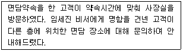
- 처음 회사에 방문하신 내방객을 위해서 회사 홍보용 기념품이나 소개 책자를 준비해 둔다.
- 내방객의 직책을 모르는 경우 정중히 “○○○님, 또는 ○○○씨, 안내해 드리겠습니다.”라고 '님'이나 '씨'를 붙여 호칭 한다.
- 비서가 면담 약속이 없는 내방객을 접대하는 중에, 면담 약속이 있는 내방객이 방문한 경우에는 공평을 기하기 위해 도착한 순서대로 상사에게 전한다.
- 내방객이 명함을 주셨는데 읽기 어려운 한자가 있어서 “죄송합니다만, 이 글자는 어떻게 읽는지 알려주시겠습니까?”라고 물었다.
(정답률: 67%)
10. 원만한 인간관계를 위한 직장 내 선후배 및 동료와의 관계에 대한 설명으로 가장 적절하지 않은 것은?
- 선배의 지도가 자신의 생각과 다르더라도 처음에는 이에 따라서 일을 처리한다.
- 관련 부서의 업무가 바쁠 때 자신에게 지장이 없는 범위 내에서 자발적으로 협력한다.
- 친한 동료나 선배로부터 금전거래는 부담스럽지 않는 범위라면 원만한 관계 유지를 위해 해도 무방하다.
- 실수한 후배에게 여러 사람의 면전이 아닌 곳에서 주의를 주며 인격에 손상이 가는 질책은 하지 않도록 한다.
(정답률: 72%)
11. 다음 중 회의의 사전 준비 업무의 순서로 가장 적절한 것은?
- 회의일시 결정 → 회의장 확보 → 통지문 발송 → 참석자 명부 작성 → 회의자료 작성
- 회의장 확보 → 회의일시 결정 → 참석자 명부 작성 → 통지문 발송 → 회의자료 작성
- 회의일시 결정 → 회의장 확보 → 참석자 명부 작성 → 통지문 발송 → 회의자료 작성
- 회의장 확보 → 회의일시 결정 → 통지문 발송 → 회의자료 작성 → 참석자 명부 작성
(정답률: 67%)
12. 상사가 갑자기 미국 지사에서 발생한 문제 해결을 위해 미국 몽고 메리 지역으로 출장을 가게 되었다. 문제 해결에 걸릴 시간을 예상하기 어려워 귀국 날짜를 정할 수 없는 상황이다. 이 경우 비서가 예약해야 할 항공권의 명칭은 무엇인가?
- 티켓 엔도스먼트 (ticket endorsement)
- 오픈티켓 (open ticket)
- 체류 (stop-over)
- 전자티켓 (e-ticket)
(정답률: 66%)
13. 다음 중 상사의 일정을 관리하는 방법으로 가장 적절하지 않은 것은?
- 상사의 일정관리 재량권이 있는 경우 상사의 일정과 상사의 업무스타일을 고려하여 일정을 계획하여 확정한다.
- 일정이 확정되면 상사와 비서의 일정표에 모두 기입하고 재확인한다.
- 일정이 겹칠 경우 우선순위는 상사가 정하도록 한다.
- 과다한 일정을 수립하지 말고 상사가 업무에 집중할 수 있는 시간을 확보한다.
(정답률: 52%)
14. 다음 중 상사에게 보고하는 비서의 자세로 가장 적절한 것은?
- 보고할 때 사안이 중대하거나 상사가 관심 있는 내용은 구체 적이고 자세히 보고하고 그렇지 않은 내용은 요점 중심으로 간단명료하게 보고한다.
- 보고할 때는 자세한 상황과 이유를 설명한 후 결론을 보고 함으로써 논리적인 보고가 되도록 한다.
- 사안이 복잡하고 긴급한 사건이 발생한 경우 상사가 내용을 정확히 파악할 수 있도록 내용을 문서로 정리한 후 보고 한다.
- 보고는 상사의 지시내용을 완수한 후에 한다.
(정답률: 68%)
15. 다음 중 조민지 비서가 상사의 해외출장을 계획하는 방법으로 가장 적절하지 않은 것은?
- 회사의 출장 여비 규정에 따라 항공편과 숙박시설을 예약하도록 한다.
- 회사와 계약되어 있는 호텔을 이용할 경우 기업할인요금을 적용받을 수 있다.
- 상사가 선호하는 항공사와 숙박시설 등 취향을 고려하여 계획을 수립한다.
- 해외 출장의 경우 상사의 여권 유효기간이 1년 이상 남아 있어야 출국이 가능하다.
(정답률: 82%)
16. 다음 중 응대예절에 대한 설명으로 가장 올바른 것은?
- 손님을 응접실로 안내할 때는 직급이 높은 순부터 입구에서부터 가까운 좌석으로 앉게 한다.
- 상대방이 연장자거나 상사와 악수를 할 경우, 눈을 마주치며 악수를 한다.
- 손님 접대시 차를 내는 순서는 손님의 앉은 순서대로 먼저 드리고 나중에 상사를 드린다.
- 하급자인 비서가 상급자인 남성에게 먼저 악수를 청하는 것은 결례가 아니다.
(정답률: 49%)
17. 상사는 주말에 골프약속이 많은 편이다. 따라서 김영숙 비서는 주말 골프 예약을 자주 하는 편이다. 상사가 주로 이용하는 골프장은 인터넷으로만 예약을 받는 곳으로 예약시작하자마자 김비서는 상사가 원하는 시간과 코스예약을 하기 위해 최선을 다하지만 잘 안 된다. 상사는 “다른 비서들은 예약도 잘하는데...”하신다. 김비서는 매사 열심히 일하는 자신을 몰라주는 상사가 너무 서운하다. 이때 김비서의 태도로 가장 바람직한 것은?
- “저도 최선을 다하고 있습니다만 상황이 매번 어렵네요.”라고 말한다.
- 골프장 예약이 다소 쉬운 골프장을 상사에게 추천해 본다.
- 죄송하다고 사과한 후 다음부터 더욱 노력하겠다는 자세를 보여준다.
- 다른 비서들은 골프장 예약을 어떻게 하는지 알아보겠다고 말씀드린다.
(정답률: 79%)
18. 대한무역(주)의 이비서는 일정이 바쁜 상사를 위하여 상사의 일정을 효율적으로 관리하기 위해 예약업무에 매우 신경을 쓰고 있다. 다음 중 이비서가 예약업무를 수행하는 것으로 가장 적절하지 않은 것은?
- 상사의 교통편 예약시에는 여비 규정, 경비 예산, 상사 선호도, 소요 시간, 안전 등을 고려한다.
- 예약 방법은 예약의 주체에 따라 비서가 직접 예약을 진행하는 방식의 직접 예약과 대행사를 통한 대리 예약으로 나눌 수 있으며, 예약 시 사용하는 매체에 따라 전화 예약, 인터넷 예약, 팩스·이메일 예약으로 나눌 수 있다.
- 인터넷사이트 예약업무는 구두로 내용을 전하기에는 정보가 많거나 복잡하고 문서화가 필요한 경우 주로 사용하는 예약 방법이다.
- 인터넷 예약시 자주 이용하는 사이트를 문서로 정리해 두고, 인터넷 즐겨찾기에 추가하고, 인터넷 사이트 목록을 문서로 정리하여 하이퍼링크로 연결해 두면 예약 시 클릭 한번으로 예약 사이트에 접속할 수 있다.
(정답률: 73%)
19. 다음 비서의 업무처리 중 가장 적절한 행동은?
- 상사가 모친상을 당한 직원에게 조화를 보내라는 지시를 하여 근조화환이 영결식 전에 도착할 수 있도록 꽃집에 주문하였다.
- 회의 진행 당일 참가비를 접수할 때 영수증에 미리 직인을 찍어 두어 발급해 준다.
- 상사 해외 출장 시 시간을 절약하기 위해 자동 체크인 키오스크(self check-in Kiosk)를 이용해서 수하물을 미리 부칠 수 있도록 조치하였다.
- 출근하여 업무 시작 전 오늘 해야 할 일을 중요도를 우선 고려하여 업무목록을 만들었다.
(정답률: 57%)
20. 김비서는 상사를 대신하여 경조사에 자주 참석하고 있다. 빈번한 경조사 업무에 대비하여 부조금 봉투를 구분하여 정리하여 사용하고 있다. 이때 문상 시에 사용할 수 있는 한자끼리 묶인 것은?
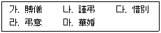
- 가, 나, 다
- 가, 나, 라
- 나, 다, 라
- 나, 라, 마
(정답률: 74%)
2과목: 사무영어
21. 다음 주소의 밑줄 친 부분과 성격이 다른 하나는?
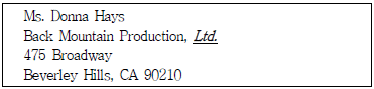
- Co.
- Inc.
- Corp.
- Ext.
(정답률: 81%)
22. 다음 대화에서 밑줄 친 부분의 숫자와 기호를 영어로 읽을 때 적합하지 않은 발음은?
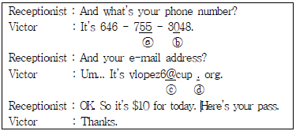
- ⓐ “double five”
- ⓑ “Oh”
- ⓒ “and”
- ⓓ “dot”
(정답률: 68%)
23. 다음 대화의 빈칸에 들어갈 적절한 단어는?
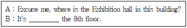
- by
- over
- in
- on
(정답률: 78%)
24. 다음 대화문에서 밑줄 친 부분의 대명사가 문법적으로 잘못 쓰인 것은?
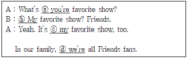
- ⓐ you're
- ⓑ My
- ⓒ my
- ⓓ we're
(정답률: 62%)
25. 아래와 같은 문서의 형식에서 밑줄 친 ⓐ부분에 들어갈 가장 적절한 것은?
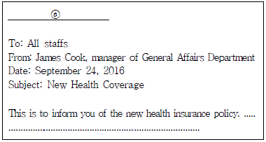
- Memo
- Business letter
- Contract
- Business card
(정답률: 55%)
26. 다음 Business letter에서 빈칸 ⓐ에 들어갈 끝맺음 인사말로 올바르지 않은 것은?
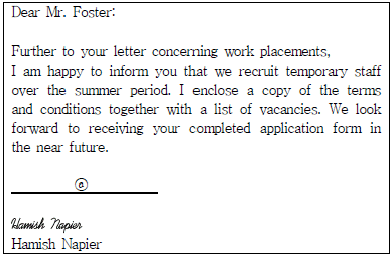
- Cordially yours,
- Your sincerely,
- Truly yours,
- Sincerely,
(정답률: 60%)
27. 영문 Fax문서의 경우, 다음 설명 중 옳지 않은 것은?
- A fax is a piece of correspondence sent over the phone lines.
- If the first page has attachments, then the first page is called a cover sheet or cover page.
- "Re" stands for "Regards."
- 'Pages: 3 (including this)' means total 3 pages are sent.
(정답률: 58%)
28. 다음 대화에서 빈칸에 들어갈 가장 알맞은 단어는?
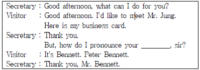
- last name
- first name
- given name
- company name
(정답률: 58%)
29. 다음의 전화 대화에서 밑줄 친 ⓐ에 들어갈 표현으로 가장 적절한 것은?
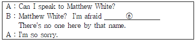
- I will put you through.
- Matthew White is expecting you.
- You must have the wrong number.
- He is in a meeting now.
(정답률: 67%)
30. 다음 내용은 어떤 글의 일부 인가?
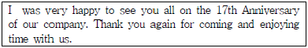
- 초대장
- 감사장
- 안내장
- 추천장
(정답률: 66%)
31. 다음 대화에 대한 설명으로 옳지 않은 것은?
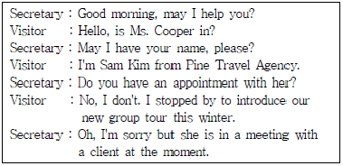
- Ms. Cooper는 고객과 회의 중이다.
- Sam Kim은 Ms. Cooper와 만나기로 약속 되어 있다.
- 두 사람의 대화가 일어나는 시각은 오전이다.
- Sam Kim은 여행사에서 근무한다.
(정답률: 70%)
32. 다음 대화의 상황을 가장 잘 설명한 것은?
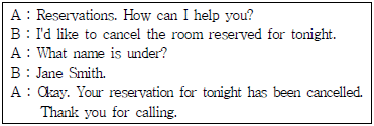
- 호텔방 예약하기
- 호텔 예약 변경하기
- 호텔 예약 취소하기
- 호텔 예약 확인하기
(정답률: 82%)
33. 다음 중 밑줄 친 ⓐ 의 의미로 알맞지 않은 것은?
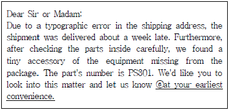
- as many as possible
- as quickly as possible
- as soon as possible
- as fast as possible
(정답률: 72%)
34. 다음 전화음성 메시지의 내용과 일치하지 않는 것은?
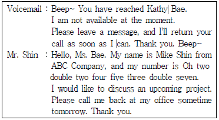
- Mike Shin은 Kathy에게 전화중이다.
- Shin의 전화번호는 02-224-5377 이다.
- Ms. Bae는 지금 전화를 받을 수 있다.
- Shin은 Kathy에게 사무실로 전화해 달라고 요청하고 있다.
(정답률: 83%)
35. 다음 Ms. Lopez의 일정표 내용과 일치하지 않는 것은?
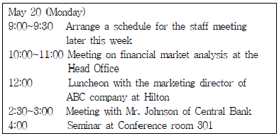
- 오전에는 두 건의 회의가 있다.
- 힐튼에서 마케팅 이사와 점심 약속이 되어 있다.
- Johnson씨는 오후에 만날 예정이다.
- 세미나는 301호 회의실에서 진행될 예정이다.
(정답률: 72%)
36. 다음 전화 대화의 순서가 맞게 연결된 것은?
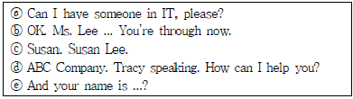
- ⓐ - ⓑ - ⓒ - ⓓ - ⓔ
- ⓓ - ⓐ - ⓔ - ⓒ - ⓑ
- ⓐ - ⓑ - ⓒ - ⓔ - ⓓ
- ⓓ - ⓐ - ⓑ - ⓒ - ⓔ
(정답률: 78%)
37. 다음 중 ⓐ가 지칭하는 것은?
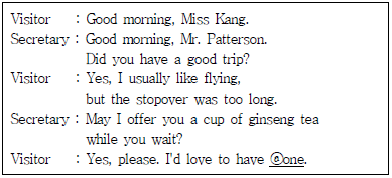
- one glass of water
- one spoon of ginseng
- a dried ginseng
- a cup of ginseng tea
(정답률: 82%)
38. 다음의 대화들 중에서 B의 응답이 가장 적절하지 않은 것은?
- A : What's my schedule today in the morning?
B : You have two meetings in the morning. - A : Can you arrange a meeting with Mr. Garner of Tree Agency?
B : Sure, I'll do it. - A : When is Clark Cruise supposed to be at my office?
B : He moved to another branch. - A : Please bring me file No. 354.
B : Yes, I'll bring it right away.
(정답률: 82%)
39. 다음 중 빈칸 ⓐ에 들어갈 말로 적절하지 않은 것은?
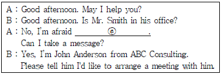
- he's out
- he's available now
- he's just stepped out
- he's not at the moment
(정답률: 67%)
40. 아래 전화 대화의 질문과 응답이 올바르지 않은 것은?
- A : When will he be back?
B : In about one hour. - A : May I speak to Mr. Johnson of the Sales Department?
B : Hold the line, please. - A : May I ask who's calling, please?
B : I'm Donald Fred of Beautiful Cosmetics. - A : May I take a message?
B : Yes, please. Could you have Mr. Kim call me back?
(정답률: 62%)
3과목: 사무정보관리
41. 다음 중 문서 접수 대장에 기입할 내용으로 가장 적당하지 않은 항목은?
- 문서 발송일자
- 발신기관명/발신자명
- 문서 접수일자
- 인수자
(정답률: 50%)
42. 다음의 정보보안과 관련한 이비서의 행동 중 가장 잘못된 것은?
- 책상의 위치를 바꾸어 내방객과 비서의 얼굴이 마주하게 하였다.
- 정보 보안과 기밀 유지 업무수행시 사내 보안매뉴얼 절차에 따랐다.
- 상사가 사용하는 컴퓨터에 비밀번호를 설정해드렸다.
- 파쇄요청을 받은 서류는 다음날 아침에 일괄적으로 처리 하였다.
(정답률: 73%)
43. 수신된 우편물 처리방법으로 장혜진 비서가 취한 행동 중 가장 바르지 않은 것은?
- 동봉물 표시가 있는 경우 봉투 속에 실제 들어있는 것과 대조해 보았다.
- 봉투와 내용 문서상의 발신자 주소가 달라서 봉투를 보관 하였다.
- 상사에게 편지를 전할 때 답장 쓸 때 필요한 자료를 첨부해서 전달하였다.
- 사후처리를 필요로 하는 편지도 즉시처리의 원칙에 따라 즉시 처리한다.
(정답률: 73%)
44. 다음 중 성격이 다른 하나는?
- 다음
- 페이스북
- 네이버
- 구글
(정답률: 89%)
45. 다음 중 운영체제에 해당하지 않는 것은?
- WINDOWS 8
- ORACLE
- UNIX
- LINUX
(정답률: 69%)
46. 다음 중 인터넷 정보의 신뢰성에 관련된 설명으로 가장 옳은 것은?
- 공신력 있는 검색엔진에서 추출된 정보는 신뢰할 수 있다.
- 개인블로그의 내용도 전문성과 공신력이 있어 신뢰할 수 있다.
- 대법원에서 제공하는 경매정보 사이트의 경매매물은 신뢰할 수 있는 정보이다.
- 온라인 오픈 백과사전에서 검색된 결과는 신뢰할 수 있다.
(정답률: 70%)
47. 다음 중 인터넷 인물검색에 관한 사이트를 이용하는 방법으로 적절하지 않은 것은?
- 인물 등록은 본인 및 대리인의 신청에 의해 이루어진다.
- 동명이인의 인물노출 순서는 해당 사이트의 검색 알고리즘에 따라 바뀐다.
- 한번 등록된 인물정보는 삭제되지 않는다.
- 인물 정보 수정은 해당 사이트에 프로필 수정을 요청한다.
(정답률: 78%)
48. 인터넷, 디지털카메라, 휴대전화 등 정보통신의 발달과 함께 전문가가 아닌 일반 사용자가 상업적인 의도 없이 제작한 콘텐츠를 온라인상으로 나타내는 것을 무엇이라고 하는가?
- UCC
- 트위터
- 페이스북
- 소셜 네트워크 서비스
(정답률: 73%)
49. 다음 중 소셜미디어의 특성으로 가장 적절하지 않은 것은?
- 개인정보가 공개되어 사생활 침해의 위험이 있다.
- 음악, 동영상 등 다양한 미디어를 활용할 수 있다.
- 개인정보를 공개하고 타인의 참여를 촉진한다.
- 정보제공자가 정보를 게시하는 일방향 커뮤니케이션에 속한다.
(정답률: 70%)
50. 다음은 어떤 용어에 대한 설명인가?
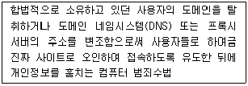
- 파밍
- 피싱
- 랜섬웨어
- 스파이웨어
(정답률: 72%)
51. 다음 중 한글의 띄어쓰기로 가장 적절하지 않은 것은?
- 고 안순덕 의사
- 안순덕사장님
- 안순덕
- 안 사장
(정답률: 77%)
52. 비서학을 전공하고 있는 김수진 학생은 이력서를 작성 중에 있다. 컴퓨터 활용능력을 표현하기 위해 다음 항목을 나열 하였다. 이 중 성격이 다른 하나는?
- Word Processor 상
- MS-Excel 상
- MS-PowerPoint 상
- MS-Access 상
(정답률: 64%)
53. 기안문서 중 보조기관의 검토를 거쳤으나 아직 결재권자의 결재가 남아 있거나, 기안문서에 대한 확인·협의가 미비하여 결재가 유보된 문서를 말하는 단어는?
- 이첩문서
- 미결문서
- 배부문서
- 미비문서
(정답률: 77%)
54. 다음 중 컴퓨터 바이러스에 감염된 파일을 치료할 수 있는 백신 프로그램이 아닌 것은?
- 바이로봇
- V3
- Norton Anti-Virus
- 백도어
(정답률: 59%)
55. 다음 중 저장매체에 대한 설명으로 가장 잘못된 것은?
- CD-ROM, 하드디스크는 자료를 영구보존할 수 있는 안전한 매체이다.
- 블루레이와 DVD는 광디스크에 해당한다.
- CD-ROM은 읽기만 가능한 데이터 저장매체이다.
- DVD는 CD보다 많은 용량을 저장할 수 있다.
(정답률: 71%)
56. 다음 중 상사의 스마트 디바이스 사용을 지원하는 비서의 업무로 가장 적절하지 않은 것은?
- 상사가 사용하는 스마트 디바이스의 제품별 특징과 운영체제를 파악한다.
- 상사의 스마트 디바이스에 있는 자료를 정기적으로 백업한다.
- 스마트 디바이스의 충전여부를 체크한다.
- 상사의 스마트 디바이스를 수시로 모니터링 한다.
(정답률: 75%)
57. 공문서의 구성요소 중 반드시 포함되어야 하는 주요소가 아닌 것은?
- 발신기관
- 문서번호
- 부기
- 수신기관
(정답률: 85%)
58. 다음 중 처리단계별 문서의 분류에 대한 설명으로 가장 옳지 않은 것은?
- 결재권자의 결재를 얻기 위해 사전에 고안된 서식에 따라 작성한 문서를 기안 문서라 한다.
- 기안 문서의 내용을 이행하기 위해 규정된 서식에 따라 작성된 문서를 시행 문서라고 한다.
- 기안하고 결재해서 시행 목적이 끝난 문서를 보관 문서라고 한다.
- 보존 기간이 끝나 자료로서의 가치가 상실된 문서를 폐기 문서라고 한다.
(정답률: 50%)
59. 다음 중 신문기사와 잡지기사에 대한 비교설명으로 가장 바른 것은?
- 신문은 정기적으로 잡지는 비정기적으로 발행되는 간행물이다.
- 신문은 시사성이 높은 정보를 잡지는 특정 주제에 대한 심도 있는 정보를 제공한다.
- 신문기사는 스크랩할 가치가 있으나 잡지기사는 스크랩할 필요가 없다.
- 신문은 장기적인 정보를 잡지는 단기적인 정보를 제공한다.
(정답률: 73%)
60. 다음 중 상대방이 이해하기 쉬운 사무 문서를 작성하기 위한 요령으로 가장 적당하지 않은 것은?
- 부정문보다는 긍정문을 사용한다.
- 문장은 명료하고 간결하게 쓴다.
- 능동적 표현은 피동적 표현으로 고쳐 쓴다.
- 긴 문장보다는 여러 문장으로 나누어서 작성한다.
(정답률: 83%)
사회가 정보화되고 업무 처리방식이 자동화되고 있으므로, 인간간의 의사소통보다는 컴퓨터 중심의 업무처리로 정확성과 객관성을 지킬 수 있어야 한다는 것은 현재 시대의 업무환경에서 필수적인 능력입니다. 언어적 의사소통 능력과 비언어적 의사소통 방법의 적절한 활용, 그리고 사회과학 지식을 바탕으로 문제해결에 도움을 줄 수 있는 능력도 전문비서에게 요구되는 중요한 능력입니다.